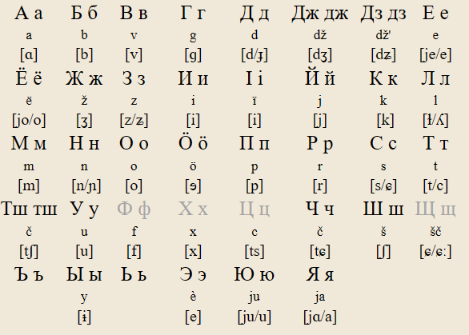
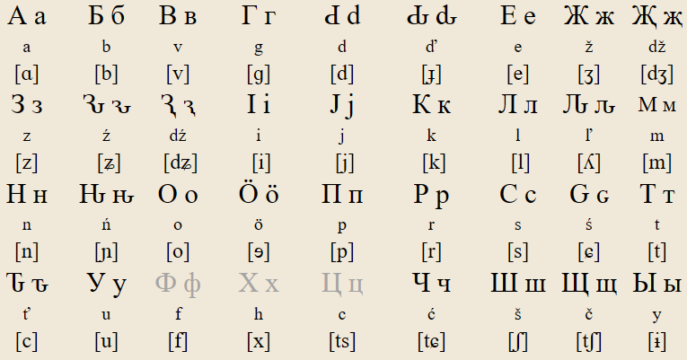
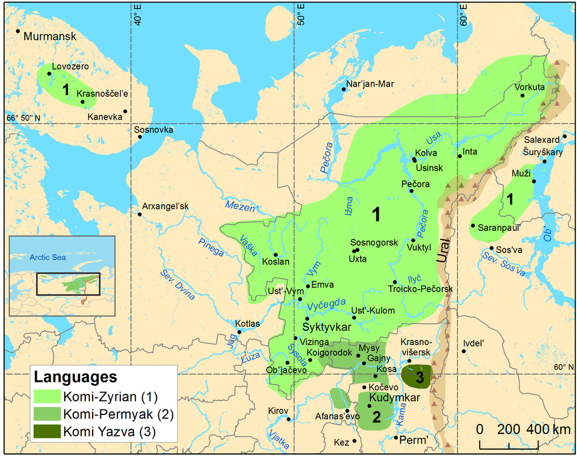
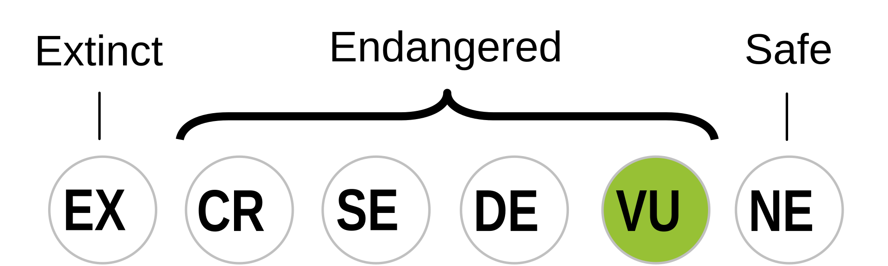

Komi (коми кыв, IPA: [komi kɨv]) is a Permic language spoken in the Komi Republic of russia, and other nearby areas like Nenetsia and Yamalia. There are about 99,609 speakers according to a 2020 census, which is a decrease from the 160,000 speakers in 2010 and the 285,000 speakers in 1994. The language has been written in many scripts before, including the Old Permic script (also called Abur), a variety of cyrillic scripts, Molodtsov, then eventually the now current cyrillic alphabet.
Komi has been written with several scripts:
| bilabial | labio-dental | alveolar | post-alveolar | palatal | velar | |
|---|---|---|---|---|---|---|
| nasal | m | n | ɲ | |||
| plosive | p b | t d | c ɟ | k ɡ | ||
| affricate | t͡ʃ d͡ʒ | t͡ɕ d͡ʑ | ||||
| fricative | v | s z | ʃ ʒ | ɕ ʑ | ||
| approximant | l | j | ||||
| trill | r |
| front | central | back | |
|---|---|---|---|
| close | i | ɨ | u |
| close-mid | ɘ | ||
| mid | e | o | |
| open | a |
Note: /ɨ/ is generally closer to /ɯ̈/ in modern speech, and /a/ is closer to /ä/.
Also, the Komi-Permyak dialect shares all phonemes of Zyrian with the addition of /ʙ/, however I do not know its phonemic status, how it is written, and how it happends.


Быдӧс отирыс чужӧны вольнӧйезӧн да ӧткоддезӧн достоинствоын да правоэзын. Нылӧ сетӧм мывкыд да совесть овны ӧтамӧдныскӧт кыдз воннэзлӧ.
Быdöс оԏiрыс чужöны воԉнöјезöн dа öткоdԃезöн dостоiнствоын dа правоезын. Нылö ԍетöм мывкыd dа совесԏ овны öтамödныскöт кыdз вонԋезлö.
Bydös otjirys csjuzsöny voljnöjezön da ötkoddjezön dostoinstvoyn da pravoezyn. Nylö setöm myvkyd da sovestj ovny ötamödnysköt kydz vonnjezlö.
Bydӧs oťirys ćužӧny voľnӧjezӧn da ӧtkodďezӧn dostoinstvoyn da pravoezyn. Nylӧ setӧm myvkyd da sovesť ovny ӧtamӧdnyskӧt kydz vonńezlӧ.
All human beings are born free and equal in dignity and rights. They are endowed with reason and conscience and should act towards one another in a spirit of brotherhood.

Traditional distribution of Komi languages

Komi is classified as “vulnerable” by UNESCO